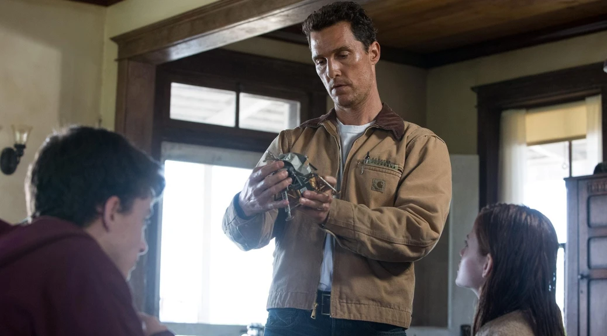
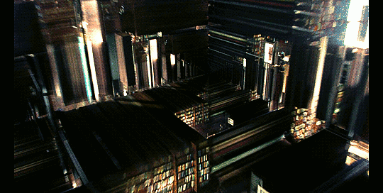
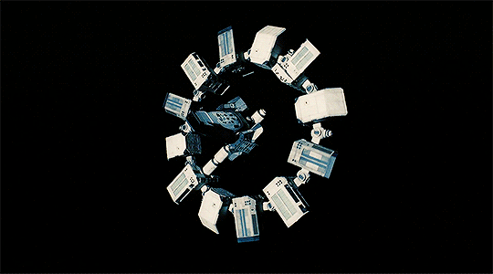
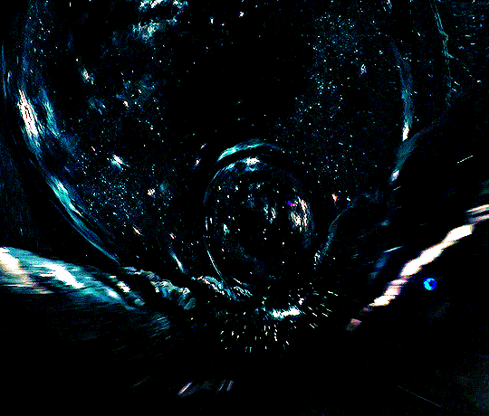

-

-
Interestelar (2014)
– Resumo Dirigido por Christopher Nolan, Interestelar é um épico de ficção científica que mistura emoção humana e física avançada. A trama se passa em um futuro onde a Terra enfrenta uma crise ambiental severa, ameaçando a sobrevivência da humanidade. Cooper, um ex-piloto e engenheiro, é recrutado por um grupo secreto da NASA para liderar uma missão através de um buraco de minhoca em busca de um novo planeta habitável. A jornada leva a equipe a mundos estranhos e perigosos, explorando conceitos como relatividade do tempo, gravidade extrema e a conexão humana que transcende dimensões. Com visual impressionante, trilha sonora marcante e questionamentos profundos sobre amor, sacrifício e sobrevivência, Interestelar é tanto uma aventura espacial quanto uma reflexão sobre o papel da humanidade no universo.
– A missão Endurance enfrenta desafios como dilatação temporal extrema: cada hora em um dos planetas visitados equivale a sete anos na Terra. Essa diferença marca dramaticamente a separação entre Cooper e seus filhos. Durante essa jornada, Cooper, movido tanto pela lógica quanto pela emoção, acaba transmitindo, através de uma anomalia gravitacional no interior de um buraco negro, coordenadas cruciais para sua filha Murph no passado — um momento que conecta os tempos e salva a humanidade.
-

cooper
Joseph “Cooper” Cooper (Matthew McConaughey) Um ex-piloto da NASA que se torna fazendeiro em um futuro sombrio na Terra. É recrutado para liderar a missão Endurance — seu amor pelos filhos e pela humanidade guia suas decisões mais difíceis.
-

Dra. Amelia Brand
Dra. Amelia Brand (Anne Hathaway) Inteligente bióloga e física da equipe, ela equilibra ciência e emoção em sua missão — especialmente quando seu amor pelo colega Edmunds entra em conflito com a lógica.
-

Murph Cooper
Murph Cooper (Mackenzie Foy, Jessica Chastain, Ellen Burstyn) Filha prodígio de Cooper: começa como uma menina curiosa e se transforma em uma física brilhante determinada a decifrar a equação gravitacional que pode salvar a humanidade.
-

TARS
TARS é um dos robôs acompanhantes da tripulação da nave Endurance. Com um design único — um bloco monolítico que pode se transformar em diversas formas usando sua estrutura retrátil — TARS é engenhoso, sarcástico e funcional. Contra o estereótipo clássico de robô humanoide, ele se destaca pela versatilidade e personalidade cativante
- 
-
Tesseract
“O Tesseract em Interestelar é uma construção quadridimensional criada dentro do buraco negro Gargântua. Ele permite que Cooper visualize todos os momentos do quarto de Murph simultaneamente, manipulando a gravidade para enviar mensagens do futuro. Visualmente, o Tesseract aparece como uma biblioteca infinita, simbolizando a complexidade do tempo e a conexão entre pais e filhos.”
- 
-
Endurance
“A Endurance é a nave espacial central de Interestelar, projetada para transportar a equipe em busca de um novo lar para a humanidade. Com seu anel rotativo, permite gravidade artificial e exploração de planetas distantes, simbolizando a esperança e a sobrevivência da espécie em meio a perigos interestelares.”
- 
-
Buraco de minhoca
O buraco de minhoca aparece perto de Saturno e funciona como um atalho no espaço-tempo, ligando a Via Láctea a uma galáxia distante. Ele é crucial porque permite que a tripulação da nave Endurance viaje a distâncias interestelares impossíveis de serem percorridas em tempo humano comum.